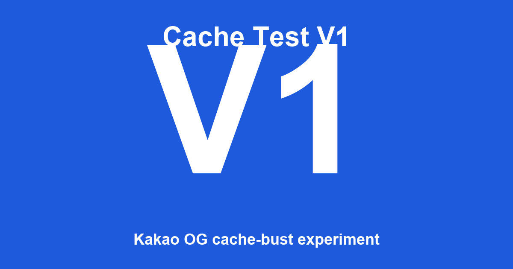

Kakao Cache-Bust Test V1
이 페이지는 카카오톡 공유 시 OG 캐시 동작을 검증하기 위한 정적 테스트용 페이지입니다.
현재 배포 상태
| og:title | Cache Test V1 |
|---|---|
| og:image | images/og-v1.png |
| og:url | https://coen90.github.io/kakao-cache-bust-test/ (query param 미포함, 통제 변수) |
현재 URL의 query parameter
이 페이지를 접근한 URL의 query: (없음)
참고: query parameter는 OG 응답에 영향을 주지 않습니다 (정적 호스팅). 이 표시는 실험 진행 중 어떤 URL에서 페이지를 열었는지 확인하기 위한 것입니다.
OG 이미지 미리보기

실험 가설
- H1: Kakao OG scraper가 URL + query parameter 조합을 별개 cache key로 다루는가?
- H2: H1이 참이라면, OG 변경 후 새 query param으로 공유하면 새 OG가 반영되는가?
자세한 실험 프로토콜은 리포지토리의 .omc/plans/kakao-cache-bust-test.md와 EXPERIMENT_LOG.md를 참고하세요.